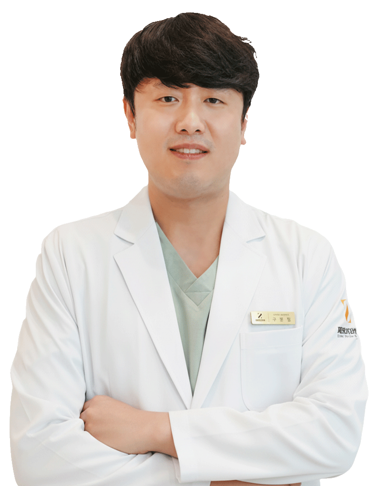
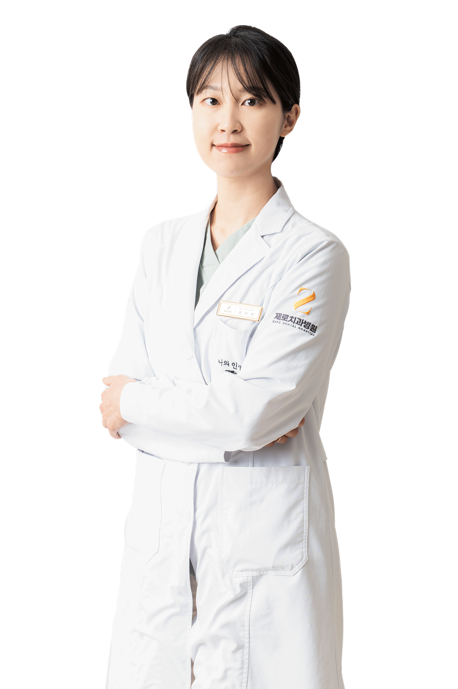
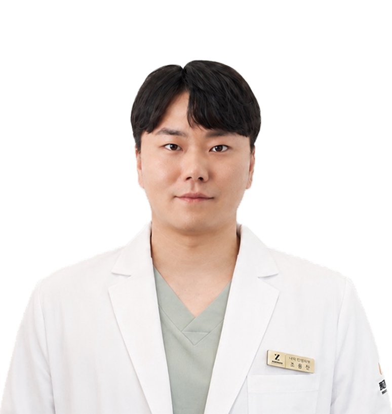

<%=m_client_name_s%> 의료진 소개
환자의 몸이 하는 이야기를 듣고 치료하는 제로치과 의료진을 소개합니다.
<%=m_client_en%>
Our Doctors
구본철 대표원장
환자의 몸이 하는 이야기를 듣고 치료하는 의료진을 소개합니다
통합치의학과 전문의
- 경북대학교 치의학전문대학원 졸업
- 경북대학교 치의학대학원 치과보철학 박사
- 보건복지부인증 통합치의학전문의
- 대한치과보철학회 우수보철치과의사
- 대한치과마취과학회 인정의
- 대한턱관절교합학회 인정의
- 대한통합치과학회 정회원
- 대한치과보철학회 정회원
- 대한턱관절교합학회 정회원
- 대한치과마취과학회 정회원
- (전) 경북대학교 첨단치과의료기기연구소 연구원
- (전) 신세계치과 원장
- 학술지 Nature scientific reports 논문 제1저자
- 학술지 JPD 논문 제2저자
Koo Bon-chul

<%=m_client_name%> 의료진
최민수 원장
치과보존과 전문의
- 경북대학교 치의학전문대학원 졸업
- 경북대학교 치과대학 인턴수료
- 경북대학교 치과대학 치과보존과 레지던트 수료
- 보건복지부 인증 치과보존과 전문의
- 치과보존과 인정의
- 대한치과보존학회 정회원
- 대한근관치료학회 정회원
- 대한심미치과학회 정회원
- (전) 범어라온치과병원 원장
- 경북대학교 치과병원 치과보존과 겸임교수
Choi Min-su

<%=m_client_name%> 의료진
장서희 원장
구강내과 전문의
- 보건복지부 인증 구강내과 전문의
- 구강내과 인정의
- 보건복지부 인증 통합치의학과 전문의
- 경북대학교 치의학전문대학원 석사
- 경북대학교 치과대학 구강내과학 박사 수료
- 경북대학교 치과병원 인턴 수료
- 경북대학교 치과병원 구강내과 레지던트 수료
- 경북대학교 치과병원 구강내과 임상교수(전임의) 역임
- 대한안면통증·구강내과학회 정회원
Jang Seo-hee

<%=m_client_name%> 의료진
권희재 원장
치과보존과 전문의
- 보건복지부 인증 치과보존과 전문의
- 대한치과보존학회 치과보존과 인정의
- 대한치과보존학회 정회원
- 대한치과근관치료학회 정회원
- 한국접착치의학회 정회원
- 경북대학교 치과대학 졸업
- 경북대학교 치과대학 치과보존학 석사 졸업
- 경북대학교 치과병원 인턴 수료
- 경북대학교 치과병원 치과보존과 레지던트 수료
- 제32회 대만 Asian Pacific Endodontic Confederation 학회 포스터 발표
- 제24회 일본 오카야마 한일공동보존학회 포스터 발표
- 2024 대한치과보존학회 추계학술대회 연구논문구연 발표
Kwon Hee-jae

<%=m_client_name%> 의료진
신동주 원장
통합치의학과 전문의
- 조선대학교 치의학전문대학원 석사
- 보건복지부인증 통합치의학전문의
- 대한통합치과학회 정회원
- 대한치과보철학회 정회원
- Harvard School of Dental Medicine Multidisciplinary Therapy Course 수료
- 서울대학교 치의학교육연수원 Advanced Periodontal/Implant Therapy Course 수료
- 서울대학교 치의학교육연수원 Advanced Dentistry Course 수료
- OSSTEM AIC Implant Master Course 수료
- DIO Navi navigation guide course 수료
Shin Dong-ju

<%=m_client_name%> 의료진
이지현 원장
통합치의학과
- 경북대학교 치과대학 졸업
- 대한통합치과학회 정회원
- 대한치과보존학회 정회원
- 대한심미치과학회 정회원
- 국민건강보험 구강검진교육 이수
- Micronic endodontic seminar 수료
- Dentalbean clinical academy Implant Course 수료
Lee Ji-hyun